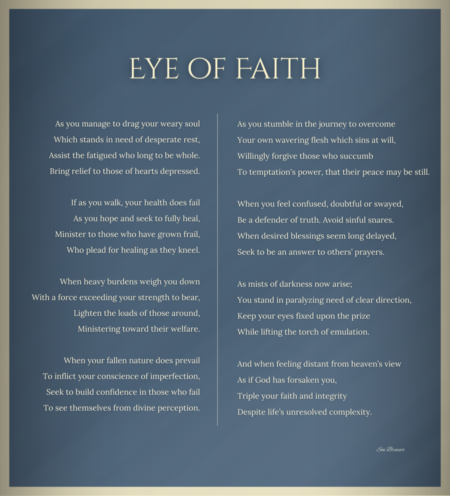
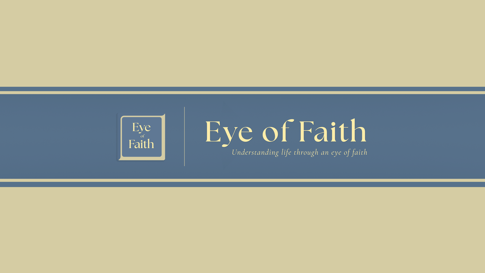

Eye of Faith
Understanding life through an eye of faith.
The show
A podcast about belief and what it costs to keep it.
Sai Brazier produces and hosts it. The work is straightforward: sit with people who have lived something worth learning from, and ask how faith figured into it.
The title is also the standard. Every conversation is an attempt to look at an ordinary life and find more in it than the surface reports.
Who sits down for it
In his own words, Sai has been blessed with several opportunities to interview and associate with well accomplished men and women of faith across the world. Those conversations are the spine of the show. He listens for three things in every one of them.
- 01Their successes. What they built, and what it actually took.
- 02Their adversities. The parts that did not resolve neatly, and what held while they waited.
- 03The wisdom they acquired along the way. The thing they would hand to someone starting out.
Studying those lives turned up a pattern Sai keeps returning to. Every one of them carried a genuine zeal for life and a desire to fulfill their life’s mission. Recording that, before it goes unrecorded, is the point of the show.
Produced, hosted, managed
Sai carries the show end to end. He produces it, hosts it, and manages it.
That is not new work for him. From May 2024 to February 2026 he served a mission for The Church of Jesus Christ of Latter-day Saints in a role that included producing, hosting, and general managing a podcast run by a sub-team of service volunteers.
The same role had him leading a team of volunteer social media content creators from across the United States, mentoring Latin American students in higher education and English literacy, joining humanitarian efforts, and doing community service.
Two years of running a show with volunteers, on a volunteer schedule, is a specific kind of training. It teaches you that the interview is the easy part.
[[TODO: is Eye of Faith that volunteer podcast, or a separate show?]]
The poem
Sai writes as well as hosts. These lines carry the show’s name and its argument: the trouble you are already carrying is what qualifies you to help someone else carry theirs.
Eye of Faith
As you manage to drag your weary soul Which stands in need of desperate rest,
Assist the fatigued who long to be whole. Bring relief to those of hearts depressed.
If as you walk, your health does fail As you hope and seek to fully heal,
Minister to those who have grown frail, Who plead for healing as they kneel.
When heavy burdens weigh you down With a force exceeding your strength to bear,
Lighten the loads of those around, Ministering toward their welfare.
When your fallen nature does prevail To inflict your conscience of imperfection,
Seek to build confidence in those who fail To see themselves from divine perception.
As you stumble in the journey to overcome Your own wavering flesh which sins at will,
Willingly forgive those who succumb To temptation’s power, that their peace may be still.
When you feel confused, doubtful or swayed, Be a defender of truth. Avoid sinful snares.
When desired blessings seem long delayed, Seek to be an answer to others’ prayers.
As mists of darkness now arise; You stand in paralyzing need of clear direction,
Keep your eyes fixed upon the prize While lifting the torch of emulation.
And when feeling distant from heaven’s view As if God has forsaken you, Triple your faith and integrity Despite life’s unresolved complexity.
— Sai Brazier

Listen and follow

Streaming links are not published here yet.
[[TODO: streaming links — Spotify, Apple Podcasts, YouTube, RSS]]
Until they are, Instagram is the place to find Sai, and the contact page is open for guest inquiries and interview requests.
Other ventures
If you know someone whose life would make a good conversation, say so. That is usually how the next episode starts.